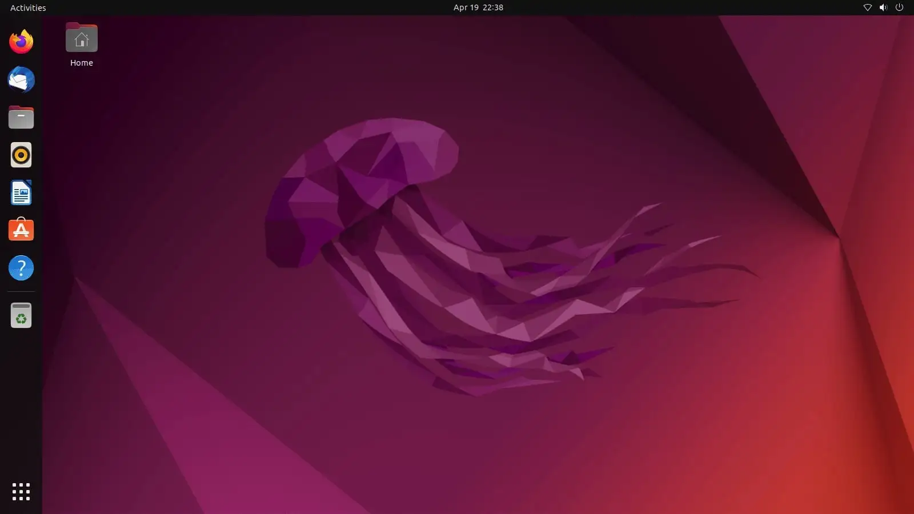
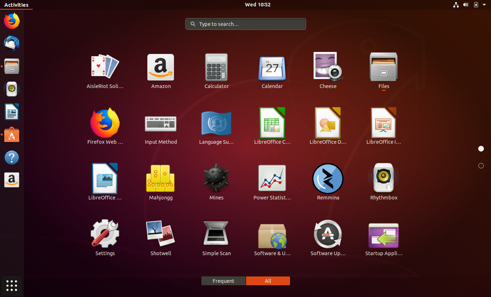
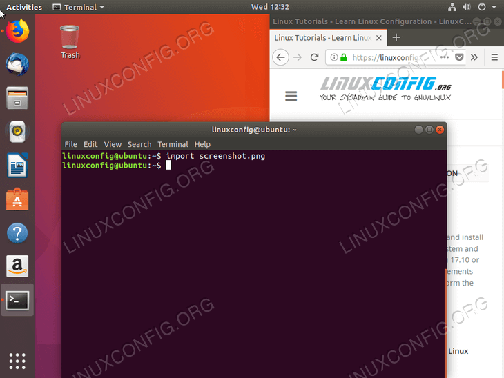

Download Ubuntu
Ubuntu is a popular, user-friendly Linux distribution suitable for
desktops, laptops and servers.
Secure, fast, and backed by regular updates and a large community.
- Modern GNOME desktop with polished UI
- Free and open-source with long-term support (LTS) releases
- Large software repository and Snap packages
- Suitable for development, productivity and everyday use



- How to Download Ubuntu
Simple steps:
- Click the download button below to get the official ISO.
- Create a bootable USB (use Rufus, balenaEtcher, or similar).
- Boot from the USB and follow the installer prompts.
-
Choose to try Ubuntu first or install alongside/replace your OS.
- Enjoy a secure and up-to-date Linux experience.
Download Ubuntu Now
ISO size: 6GB
Click here to return